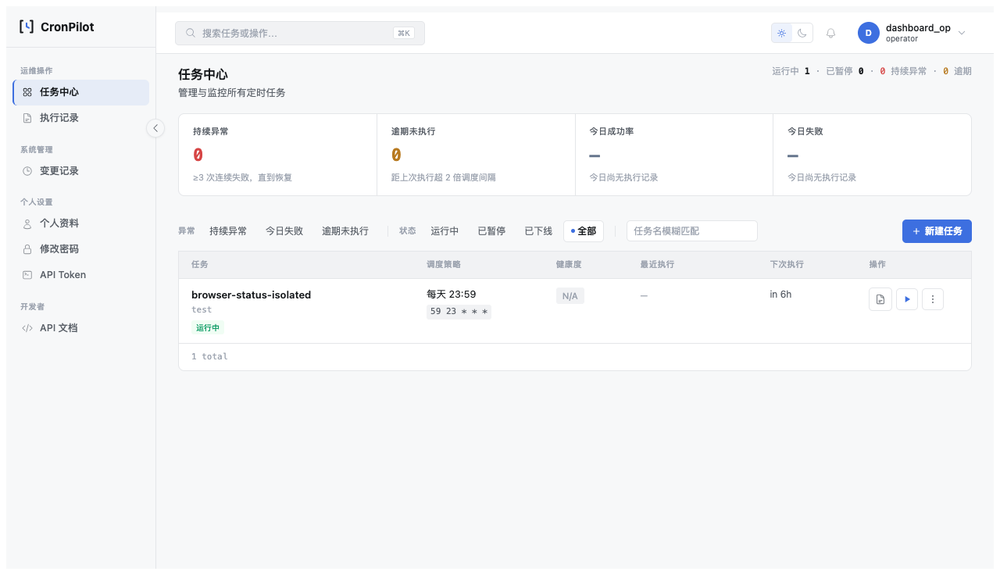
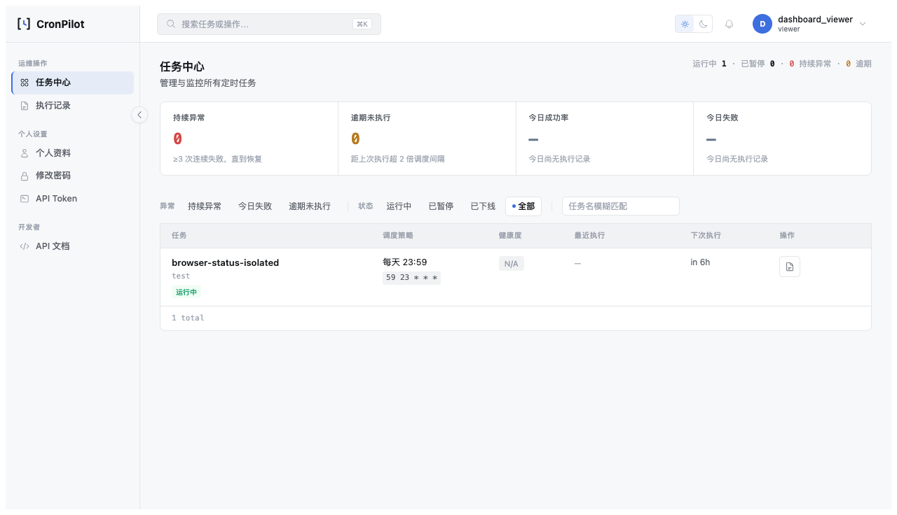

发布前六项测试失败分类与修复设计
rev.2 · 2026-11-03 · 状态：用户确认后已实施；以下保留 rev.1 设计及历史评估。
版本记录
rev.1：复现六项失败、核实调用链并提出可校准的测试修复边界。rev.2：实施测试修复、补充独立验证及环境事件复盘。
交付契约
| 对象 | 调用与授权 | 错误及安全边界 | 验收 |
|---|---|---|---|
| API /api/cron/status 测试 | 用户 Token、全局 Token、任务 Scope | 越组仍按原响应拒绝；允许访问不等于允许假定调度一定成功 | 正反权限、认证、数据库状态与调度调用独立断言 |
| Web /update_status 与 CSRF 测试 | Session、权限、CSRF | 缺失及错误 Token 必须拒绝且零写；有效 Token 通过守卫后仍须真实业务条件成立 | 有效/无效 Token、当前授权与实际状态变更 |
| 任务中心状态控制 | Operator 真实页面、会话及脚本加载 | 目标、CSRF 与签名重试语义不变；测试不得只检查旧的内联字符串 | 静态连接检查及隔离浏览器确认、请求、响应与 JobStore 事实 |
1. 问题与复现
当前工作区执行 .venv-py311/bin/python -m unittest tests.test_api_scope_s6.TestScopeIsolation tests.test_cron_run_now.TestCronListRunNowButton tests.test_csrf.TestCsrfOnUpdateStatus -q：17 项中 6 失败，退出 1；源文件 SHA256 和 HEAD 见基线。上次全量 1146 项、6 失败、12 跳过是历史运行；本轮未重跑全量。
2. 根因与证据强度
- API Scope 三项：test_own_group_allowed、test_global_task_allowed、test_group_change_immediate 的夹具 patch
app.services.cron_service.scheduler；当前实际保存走cron_status_apply.save_status→apply_status，该模拟未作用于新调用。对组内和全局任务实测返回“目标状态已保存，调度器未启动”；越组仍返回“任务不存在”。这证明本次允许路径已进入状态应用并受停止的测试调度器影响，不证明所有 API 安全路径均正确。 - CSRF 一项：test_post_with_token_ok 同样 patch 旧位置，测试得到已保存但调度器未启动的业务错误。此响应不同于 CSRF 错误，说明通过了本次 CSRF 守卫，但不能以此证明真实调度成功。
- 任务中心两项：test_vue_mount_point_data_attrs_present 与 test_run_url_already_contains_id_param 仍断言内联
$.post('/update_status', ...)；现在 dashboard.html 调用CpStatus.perform，共享 cron-status.js 根据首次请求或签名重试选择端点并传 id、目标和 CSRF。仅检查页面内旧字符串会误报，页面加载脚本与真实请求仍须验证。
这些是当前 6 个断言失败的定位；并不推导所有业务问题都只是测试问题，启停提交后读取修复、完整产品路径、图片资产与版本归档仍须各自验收。
3. 推荐方案
- API Scope 测试保留真实 Token 守卫、对象 Scope 和 save_status 数据库写入；在状态应用边界替换 apply_status 为确定成功，断言允许路径业务成功及目标状态，越组/无效 Token 路径不得调用该边界。组变更前后分别断言拒绝及允许，缓存失效按现有机制执行。不要在 Scope 或认证函数上打桩，也不要把所有非 401 当通过。
- CSRF 测试在有效 Token 分支仅替换状态应用边界，验证业务状态变化与调用一次；缺失/错误 Token 明确断言拒绝、无状态写入、无调度调用。该测试证明 CSRF，不代替真实 JobStore；原有 D2 测试继续覆盖真实调度。
- 任务中心测试验证页面加载 cron-status.js、状态按钮委托 CpStatus、共享模块使用明确目标/id/CSRF 和签名重试；保留不可见角色按钮及禁止 URL 查询参数的行为断言。增加或复用隔离浏览器验证，在任务列表从点击、确认到响应与 JobStore 观察完整路径；不得仅改字符串以掩盖模块漏加载。
备选为简单放宽六条断言或对整个请求返回成功打桩：会遮蔽 Scope、CSRF 或真实调度错误，不采用。若实际负例证明存在业务缺陷，应停止并另行设计，而不是在本批顺带修改产品代码。
4. 范围
预计修改 tests/test_api_scope_s6.py、tests/test_csrf.py、tests/test_cron_run_now.py；按需新增隔离浏览器验收工具和测试，不修改 app/、前端资源、API、数据库或权限策略。测试必须用内存数据库；真实 JobStore/浏览器使用专有隔离库、测试账号及全局暂停调度器，不连接开发库或发出真实触发请求。本批无前端页面可见变更，无需页面对比。
5. 分批
- T0：确认工作区指纹并冻结失败事实；若文件改变重新读取。
- T1：API/CSRF 夹具及正反断言，分别运行相关测试并做一次权限/CSRF 否定控制。
- T2：任务中心静态连接与隔离浏览器请求链路，校准模块缺失及请求目标错误时测试能失败。
- T3：D2 真实 JobStore、相关回归、全量、文档与发布门禁；保留七要素复盘，明确原有独立发布阻断。仅用户要求时提交。
6. 验收与防护
- 17 项聚焦测试全部通过且 6 个原失败均实际执行，禁止 skip、删除安全断言或更改业务预期以掩盖失败。
- 越组和错误 Token 不发生状态应用；有效 Scope 的目标值落库；缺失/错误 CSRF 零业务写和零状态应用。
- 模拟后端确认仅覆盖 Scope/CSRF 测试的外部应用边界；另跑现有
tests.test_cron_status_apply_d2与tests.test_status_postcommit_snapshot保留调度失败、提交后与重试语义。 - 真实浏览器运行任务中心点击、确认、网络 body 中 id/status/CSRF、成功响应以及隔离数据库/Job 状态；覆盖 Operator 允许、Viewer 不可见/反向拒绝。运行时破坏模块加载或目标字段时验证会失败。若现有脚本只覆盖详情页，不得把它冒称任务列表链。
- 执行全量 discovery，逐项记录通过/失败/跳过；术语、文档、Ruff、关键路由与双后端相关回归；SQLite 测试后核对开发库但不操作真实任务。既有发布图片、版本和容器/发布包门禁仍独立报告。
.venv-py311/bin/python -m unittest tests.test_api_scope_s6.TestScopeIsolation tests.test_cron_run_now.TestCronListRunNowButton tests.test_csrf.TestCsrfOnUpdateStatus -q .venv-py311/bin/python -m unittest tests.test_cron_status_apply_d2 tests.test_status_postcommit_snapshot -q .venv-py311/bin/python -m unittest discover -s tests -q .venv-py311/bin/ruff check app/ tests/test_api_scope_s6.py tests/test_csrf.py tests/test_cron_run_now.py .venv-py311/bin/python scripts/smoke_routes.py --check .venv-py311/bin/python scripts/check_terminology.py --check .venv-py311/bin/python scripts/html_docs_to_markdown.py --check
7. 风险与预防
最主要风险是边界 mock 把有效访问误当 Job 成功，或 UI 字符串测试无法发现模块未运行。用权限反例、状态写入、真实 JobStore 和真实浏览器四层分别验证。用户已明确：有权限时发起的在途操作允许完成，降权后新请求按新权限检查；本批不重新引入撤权竞态修复。所有修复必须形成定位、根因、测试漏洞、修复、防护测试、同类排查和具体可复现预防措施七项复盘。
8. 本轮实际验证
本轮 17 项聚焦复现 6 失败；单独调用 API 得到组内/全局的调度未启动错误与越组拒绝；有效 CSRF 请求同样进入已保存、调度未启动分支。上述探针仅在独立内存测试库执行。其余命令是确认后的计划，不是本轮结果。本地数据库和运行中的调度任务未被本评估修改。
9. 实施验证与测试修复复盘
专业判断：按真实认证、授权和数据库写入与状态应用边界分层，是适合本批的修复；真实调度事实仍需独立 JobStore 验证，不能由模拟结果代替。本批没有修改产品代码。
- 定位：三项 API Scope、一项 CSRF 与两项任务中心断言失败，原因均在测试契约与当前调用链脱节，不能据此断言产品不存在其他问题。
- 根因：旧夹具模拟不再执行的调度器位置，页面断言依赖已迁移的内联脚本。
- 测试漏洞：过去允许路径断言过宽、缺少写入及应用次数的联合核对；静态字符串无法证明模块可加载和目标值正确。
- 修复：权限及 CSRF 保留真实守卫和数据库，只替换状态应用边界；明确允许和拒绝的状态及调用次数；页面断言改为当前模块契约。
- 防护测试：聚焦及关联回归 35 项通过，全量 discovery 1158 项通过、12 项跳过；隔离浏览器验证 Operator、Viewer、请求参数、真实 JobStore；注入模块缺失和错误目标均被检测。Scope 与 CSRF 绕过分别进行否定校准，均触发断言。
- 同类排查：搜索旧 scheduler patch 后发现其他测试仍使用该位置；其涵盖其他调用链，本批未宣称全部失效或逐项审计。全量测试通过不等于证明它们的每个模拟边界均有效。
- 预防：
scripts/verify_dashboard_status_browser.py将模块缺失及目标篡改校准纳入可重复浏览器验证；doc/qa/evidence/release-six-test-repair-2026-11-03/calibration.py验证 Scope 与 CSRF 否定路径能检出绕过；python -m unittest discover -s tests -q持续运行强化后的正反断言。
实测命令与结果：.venv-py311/bin/python -m unittest discover -s tests -q：1158 项，12 跳过，成功；.venv-py311/bin/python scripts/smoke_routes.py --check：86/86；.venv-py311/bin/python scripts/verify_cron_edit_noop_mysql.py --port 33089：MySQL 隔离库验证通过并移除；D2 MySQL 验证输出 D2_VERIFIED 和 D1_API_VERIFIED。具体证据：汇总、浏览器结果、MySQL 结果。
PYTHONPATH=. .venv-py311/bin/python doc/qa/evidence/release-six-test-repair-2026-11-03/calibration.py .venv-py311/bin/python scripts/verify_dashboard_status_browser.py --output-dir /private/tmp/cronpilot-dashboard-new-empty --executable-path '/Applications/Google Chrome.app/Contents/MacOS/Google Chrome'
隔离浏览器：Operator 执行后页面和 Viewer 反向路径：


10. Docker 自动恢复环境事件复盘
- 定位：为 MySQL 验证启动 Docker Desktop 后，已有容器 cronpilot-cronpilot-1 因自动重启策略运行，并与本地 5001 服务共用 SQLite 数据目录。
- 根因：启动守护进程前没有核对已有 Compose 服务的自动重启和共享挂载，未预见守护进程恢复会启动另一个调度器。
- 测试漏洞：隔离测试关注新建容器和测试库，没有验证 Docker 守护进程启动时已有服务的副作用。
- 处置：发现重叠后停止该已有容器，未删除容器或数据；本地 5001 服务保留。临时 MySQL 容器和其隔离数据库已移除。
- 验证与边界：重叠约 17:14:45 至 17:22:36（本地时间）；观察到一次 SQLite disk I/O error。现有 job_log 在该时段记录一次调度，未发现同任务同分钟的重复记录；这不能排除未记录或跨分钟的重复请求。停容器后数据库完整性与外键检查通过，不能据此推断外部请求没有影响。
- 同类排查：本仓库 Compose 配置中 cronpilot 使用自动重启并挂载该数据目录；本检查不覆盖其他 Compose 项目，也不能证明没有其他进程访问数据库。
- 预防：新增只读工具
doc/qa/evidence/release-six-test-repair-2026-11-03/docker_preflight.py，启动 Docker 前检查本仓库 Compose 自动重启、默认调度及数据库挂载，发现风险返回 1，配置无法解析返回 2；启动前后另查所有容器及相关进程。自测命令.venv-py311/bin/python doc/qa/evidence/release-six-test-repair-2026-11-03/docker_preflight.py --self-test返回 OK；对现配置运行无参数命令预期返回 PREFLIGHT_BLOCK 和退出码 1。工具不修改容器，不覆盖其他项目。